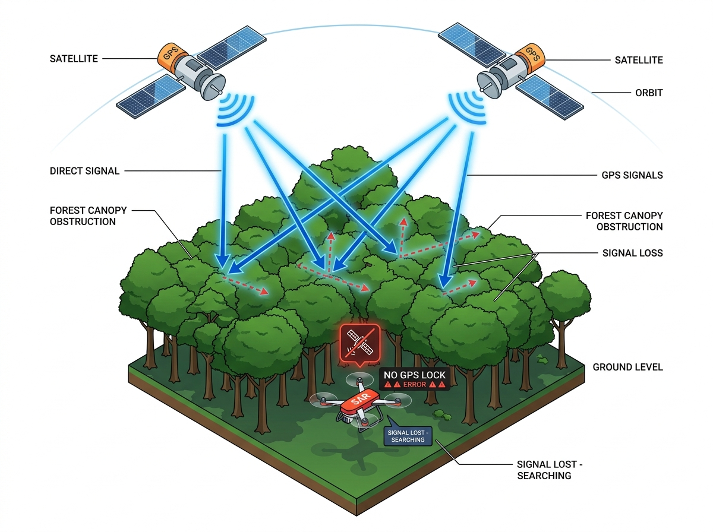
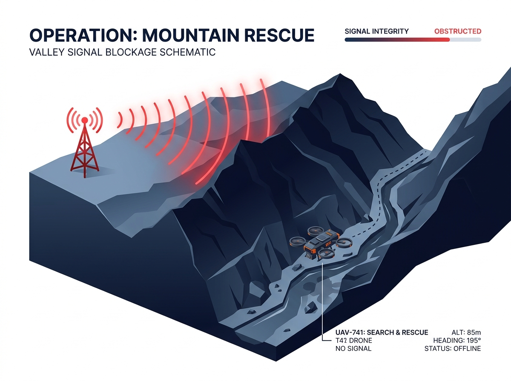
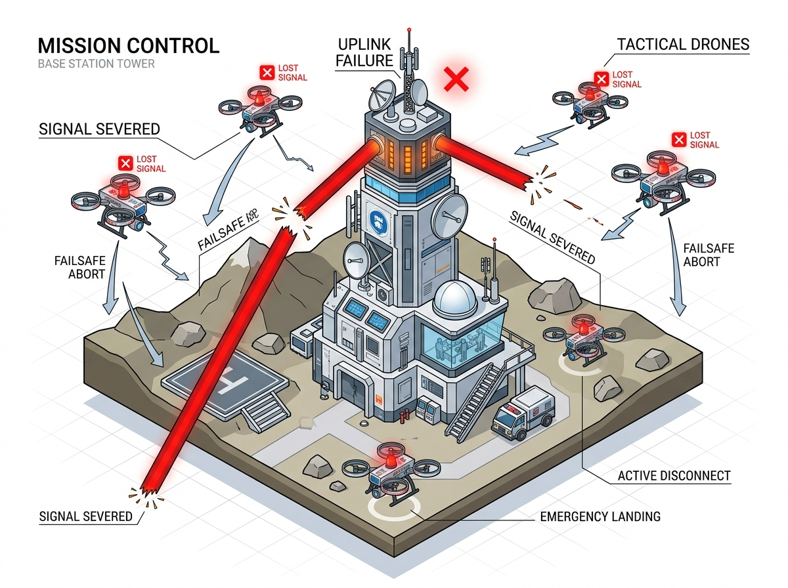
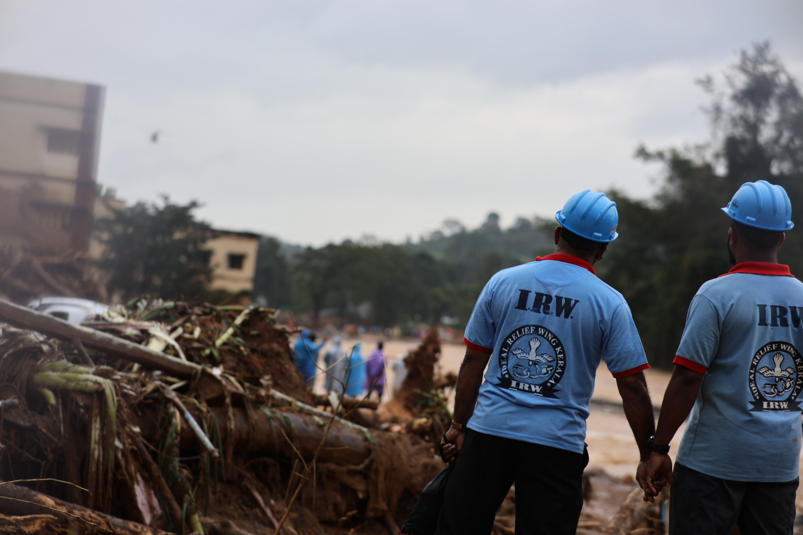

GPS Loss and Radio Blackouts Cripple Disaster Rescue
- Mountain valleys cut drone video feeds
- Dense trees block satellite GPS signals
- Single control towers cause mission failure
- Manual searching delays finding trapped victims
- Military drones cost over ₹40 Lakhs each
SUBSYSTEM FAILURE SCHEMATICS & TARGET MOAT
3 SYSTEM VOIDS

SUBSYSTEM A VOID
Canopy GPS Drift
GNSS Multi-Path Crash

SUBSYSTEM B VOID
RF Ridge Cut
Digital Cliff Blackout

SUBSYSTEM C/D VOID
Central Link Abort
Single Point Swarm Loss
REAL DISASTER FIELD EVIDENCE
SOURCE 01 / 03

Wayanad Landslide Search
Western Ghats • NDMA Official Disaster Review
FIELD BOTTLENECK
“70% of commercial drones lost connection behind mountain ridges and crashed under thick tree canopy.”
CONTINUOUS LOOP